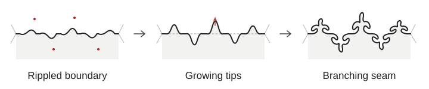
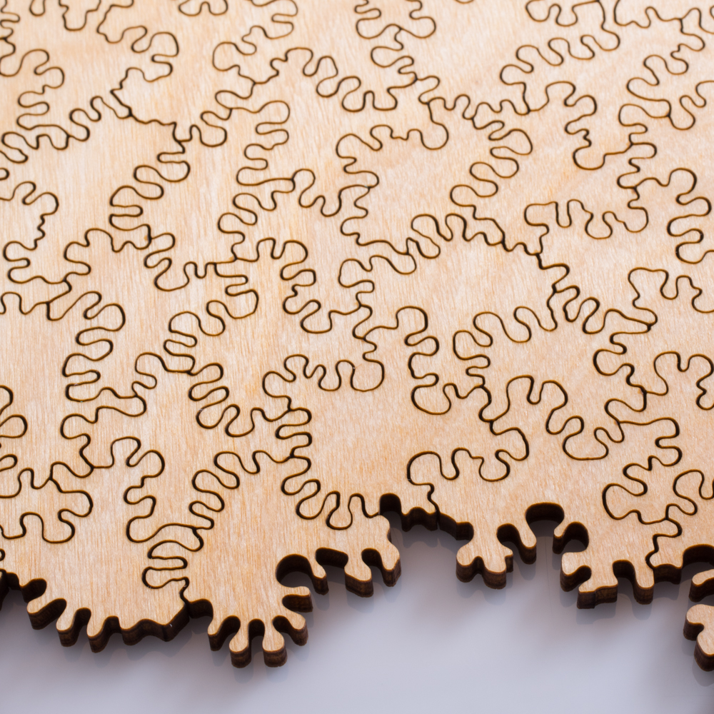

Crystal growth
Dendrite
A slight ripple can become a branching knob. The published solver lets both pieces advance along their shared boundary.


- Seed and ripple the boundarySeeds spread until regions meet. The 2012 solver assigns different phase labels to neighbors, reuses five labels across the board and ripples the boundaries.
- Extend the tipsEach phase has a temperature field. As one tip advances it releases heat, slowing growth beside it. This lets the tip protrude farther.
- Form side branchesSmaller tips form along a growing finger. Long runs can soften these fine branches as heat travels between distant pieces that share a phase label.